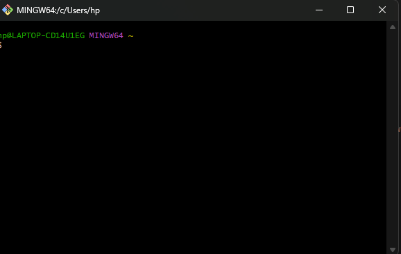

Remembering complex syntax and obscure flags across Git, Docker, and Linux is exhausting. Project Terminal translates everyday natural phrasing directly into verified, executable shell commands in under 15ms.

Four distinct engineering pillars ensure accurate, secure, and instant command synthesis without sending any data off your machine.
Trained on 2,190+ colloquial phrases. Speak naturally using conversational words like "banao", "hata do", "chhupe hue", or standard technical English.
Powered by multilingual-e5-small (~130 MB). Maps queries to 384-dimensional dense embeddings
and calculates cosine similarities against 322 pre-indexed intent vectors.
Extracts variable entities (branch names, container IDs, file paths) dynamically using dual techniques: prepositional regex markers and dynamic stopword subtraction.
Destructive commands like rm -rf, docker rm, or branch deletion automatically
enforce safety confirmation flags before execution to protect your environment.
Deterministic, zero-cloud execution pipeline running on local CPU without sending a single byte to external servers.
Converts input into 384-dimensional vector space via intfloat/multilingual-e5-small (~130
MB). Normalizes representations across both English and Hinglish idioms.
q = model.encode([query], normalize_embeddings=True)[0]
Computes dot products across all 320+ pre-calculated intent representations. Enforces a strict
0.85 confidence threshold to eliminate hallucinations.
sims = emb @ q; intent = labels[np.argmax(sims)]
Extracts target names via dual mechanisms: prepositional regex markers (naam ke, called) and dynamic stopword vocabulary filtering.
name = extract_name_by_marker(text) or extract_name_by_stopwords(text)
Synthesizes commands from the verified 524-command registry. Flags destructive commands with explicit confirmation prompts to prevent data loss.
cmd = entry['template'].format(**slots)
Browse through our verified command templates across Git, Docker, and Linux. Click "Try in Terminal" to test any command directly in the live simulator above!
Download the Windows standalone application ready to run on your local machine. It includes the AI engine, command registry, and intent database.
Short, crisp answers about running and extending Project Terminal on your local machine.
No internet connection or API keys required. The entire neural embedding model
(multilingual-e5-small) runs completely on your CPU with zero telemetry or data leaks.
It maps informal colloquial words (like "banao", "hata do", "chhupe hue files") to verified shell commands using semantic cosine distance, achieving >95% natural language accuracy.
High-risk commands (like rm -rf, docker rm -f, or
git branch -D) are flagged with "confirm": True and require explicit
confirmation before execution.
Works natively across all major platforms. The package includes run_windows.bat for
Command Prompt/PowerShell and run_mac.sh / run_linux.sh for Unix bash.
Covers Git branches, tags, stashes and remotes; Docker containers, volumes, networks and compose; plus Linux file permissions, disks, network sockets, and systemd services.
Yes. Add 3-5 example phrases to intents.py and bind the command pattern in
command_registry.py. The AI engine automatically rebuilds indexes on restart.
Requires standard Python 3.10+ and under 350 MB RAM. No dedicated GPU or CUDA drivers are needed—the quantized model runs effortlessly on budget laptops.
Commands are classified and slot-extracted in under 45ms. Pre-computed embedding matrix operations ensure instant terminal responses with zero lag.